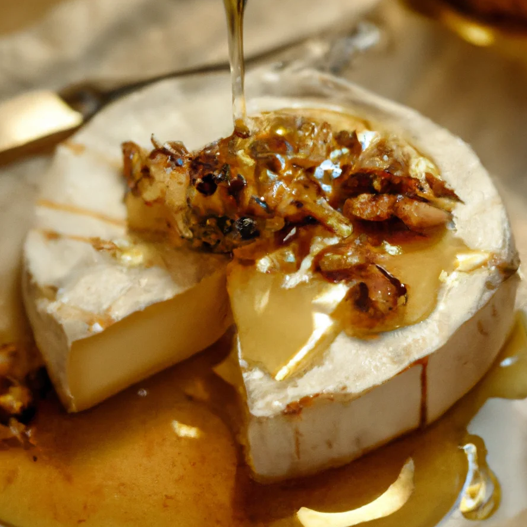

BIENVENIDO A LA SECCION DE RECETAS!
¡Bienvenido a nuestra sección de recetas! Aquí encontrarás una deliciosa colección de recetas creativas que resaltan la riqueza y versatilidad de nuestros quesos. Desde entradas y ensaladas hasta platos principales y postres, cada receta está diseñada para inspirarte a experimentar en la cocina.

Ingredientes:
-Pan de baguette (o tu pan favorito)
-Queso Brie
-Miel
-Nueces (o nueces pecanas), picadas
-Aceite de oliva
-Sal y pimienta al gusto
-Ramitas de tomillo (opcional)
Preparar el Pan: Precalienta el horno a 180 °C. Corta el pan en rodajas y colócalas en una bandeja para hornear. Rocía con un poco de aceite de oliva y hornea durante unos 5-7 minutos, hasta que estén doradas. Agregar el Queso: Retira el pan del horno y coloca una rebanada de queso Brie sobre cada tostada. Hornear de Nuevo: Vuelve a colocar la bandeja en el horno y hornea durante otros 5-10 minutos, hasta que el queso esté derretido y burbujeante. Terminar con Miel y Nueces: Una vez fuera del horno, rocía las tostadas con miel, espolvorea las nueces picadas y, si deseas, añade unas ramitas de tomillo. Agrega sal y pimienta al gusto. Servir: Sirve caliente como aperitivo o acompañamiento.